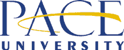

|
| |
We are
pleased
to present :
four
tuesday night talks with new media artists
fall 2004
::::::::::::::::::::::::::::::::::::::::::::::::::::::::::::::::::::::::::::::
please join
us!
Lecture
Hall West, 1 Pace Plaza, Pace University, NYC
free admission
curated by Jillian Mcdonald
contact co-directors Jillian Mcdonald + Francis T Marchese
digitalgallery@pace.edu :: 917.779.4947
<click for printable pdf>
::::::::::::::::::::::::::::::::::::::::::::::::::::::::::::::::::::::::::::::
the lineup
7pm.
tuesday oct 5 :: josé
carlos casado + michael mandiberg
7pm. tuesday oct
12 :: john gerrard (ireland)
+ yucef
merhi
>peter horvath's (canada) work will be on view in the gallery oct 12- dec
12<
7pm. tuesday nov 9 ::
cory arcangel
7pm.
tuesday nov 30 :: andrea
polli + annette weintraub
::::::::::::::::::::::::::::::::::::::::::::::::::::::::::::::::::::::::::::::
josé
carlos casado :: pandora’s
box (revisited)
links::
Artist's
Site
bio :: José Carlos Casado is an artist from Spain currently living in New York. He has exhibited in solo and group shows internationally. He has won several prizes/recognitions, to name some: Grant from Picasso Foundation, LaCaixa Foundation’s Scholarship, MIT Leonardo Excellence Award’01, and NYFA Fellowship in Video. He has participated in 18 international New Media Festivals, including Sundance and ArsElectronica, and has been published in the cover of Leonardo, by MIT. Picasso Foundation did a retrospective show and published a catalogue (178 pp) of his most recent work. He recently showed at Postmasters Gallery in NY. He will be part of the Media City Seoul Biennale next December.
statement
::
"My
recent work, including interactive video installations, photographs and drawings,
focuses on three themes: "reality", "fears" and "flesh".
These notions allow us to enter a critical and poetic vision of a future already
here. In them we see and feel how the human body is increasingly an artificial
product, how biological reproduction is separated from sexual desire, or how
what is being presented to us as the real thing is in fact the ultimate unreality."
michael
mandiberg :: new new media art
links::
Artist's Site
statement:: "My contribution to the field of New Media Art began during the euphoric dot.com moment before the crash, and continues through the changing conditions surrounding the Internet. Correspondingly, my work negotiated that moment. At that moment the Net.Art community was involved in huge online discussions about the acceptance of the form by the institution, and its inevitable inclusion in the institution. The question was "Is Net.Art dead." This question, of course, has been raised about many many artistic movements. The question is useful, but only if you read it against the grain. If you ask, what are the conditions that have changed, and how has that shifted the modes of production away from the ones that were before."
bio::
Michael
Mandiberg is a New Media Artist who uses the Internet, Video and performance
to explore subjectivity, labor, and commerce. He is interested in our everyday
experience of the Internet: all of the new forms that we engage with in our
everyday life as info-consumers, and which we don’t think about. These
include the home page, the search engine, the banner advertisement, the do-it-yourself
site, and the e-commerce site. He inserts personal information into these depersonalized
genres. His recent projects include the DVD exhibition First Person in collaboration
with Carla Herrera-Prats and Anne-Julie Raccoursier, and The Exchange Program,
a collaborative performance where four sets of two people switched lives for
11 days. To provide information for his partner he built The Essential Guide
to Performing Michael Mandiberg, an online do-it-yourself guide to his persona.
His work has been exhibited at such venues as Ars Electronica Center in Linz,
ZKM in Karlsruhe, Germany, Transmediale Festival, Berlin, and C-Level, Los Angeles.
His work has been written about in The New York Times, The Chicago Tribune,
The Berliner Zeitung, and Wired.
john
gerrard ::
recent work
links::
Artist's Site
statement:: John Gerrard's varied works investigate the emotional possibilities of digital technologies.
bio::
John Gerrard lives in Ireland and was born in 1974. Most recently he was Siemens
Artist in Residence to the Ars Electronica Futurelab (2004). Recent shows include
Some Exhaust, Lehmann Maupin Gallery, NY, The Ars Electronica Festival, Austria,
The Liverpool Biennial, UK and Passage of Mirage in the Chelsea Art Museum.
NY. The artist received a BFA (Sculpture) from the Ruskin School of Oxford University
in 1997, an MFA (Art and Technology) from the Art Institute of Chicago in 2000
and an MSc (Multimedia) from Trinity College Dublin in 2001.
peter
horvath :: on
view fall 2004
links::
Artist's Site

statement:: "Formally, I see myself as a participant and investigator in the realm of new media art as it exists on the web. The Web in its binary aspect mirrors the process of choice-making by which we navigate our environments, making it an ideal medium to discuss issues relating to the realm of subjective experience. Conceptually my work derives from and revolves around my unchanging curiosity about the nature of identity and consciousness. To me, identity is related to and generated by what belongs to the spectrum of one‘s history: subjective or objective, microscopic or macroscopic, private, familial, and socio-political. Through my work I attempt to address the difference between conscious and subconscious identity and drives. In the frontier world of web technology I have found a medium that encompasses and expands the lush, pluralistic and multi-layered qualities of my previous dada-inspired photomontage work. Freed from the restricting two-dimensional context by technological advances, I engage in fragmented narratives and sub-narratives that form and reform as multiple windows open and close. I orchestrate layers of history, including journal entries, sketches, written records, video, photographs, music, voice and general sound loops, resulting in a atmospheric investigation into states of being."
bio::
Peter Horvath works in video, sound, photo-based and new media. Camera in hand
since age 6, he inhaled darkroom fumes until his late 20‘s, then began
exploring art forms in time based media. Immersed himself in digital technologies
at the birth of the Web, co-founded 6168.org, a site for net.art, and adopted
techniques of photo-montage which he uses in his net based and 2D works. Exhibitions
include the Whitney Museum Of American Art‘s Artport, the 17th Stuttgarter
Filmwinter (Stuttgart, Germany) FILE 2004 (Sâo Paulo, Brazil), Video Zone
International Video Art Biennial (Tel Aviv, Israel) the Thailand New Media Art
Festival (Bangkok, Thailand) the Musée national des beaux-arts du Québec
(Québec City, Canada) as well as venues in New York, Tokyo, London, and
numerous net.art showings. He is a founding member of the net.art collective
Hell.com. He likes to consider a future when high bandwidth will be free.
cory
arcangel ::
i heart computers
links::
Artist's
Site
bio :: Cory Arcangel is a computer artist, performer, and curator who lives and works in Brooklyn. He is a founding member of BEIGE [aka the Beige programming crew /Beige Records], a loose knit crew of like minded computer programmers, and enthuiasts. Their work has been called "genius" by XLR8R magazine, and they were named in the NYTIMES best art moments of 2002 poll. Cory's recent exhibitions include The 2004 Whitney Biennial, Seeing Double at the Guggenheim, and Killer Instinct at the New Museum in New York. Recent curatorial projects include "The Infinite Fill Show" @ Foxy Productions, an open call black and white only art show based on MAC Paint. He spends most of his time surfing the INTERNET, fooling around on his guitar, and listening to acid house music.
statement
::
"I
live in NYC, it is Saturday night, and I sitting at home listenin to one of
Joe Beuckman's [BEIGE] mix CD's surfing the internet trying to decide if I want
to learn how to write a scroller for a commodore64 [def not...], write a NES
rom in HEX [maybe], or learn flash to make a website for my new Drum and Bass
crew "the Motley Crew BASS crew" [probably....]. That should explain
enough.....
yucef
merhi :: poetic engineering
links::
Artist's
Site
bio :: Yucef Merhi is a Venezuelan-born cultural producer based in New York. He studied Philosophy at the Universidad Central de Venezuela and New School University. For the period of 1995-1997 he was granted with a fellowship to participate in a prestigious poetry workshop of South America, at the Center of Latin American Studies Rómulo Gallegos (CELARG). Since 1985, Merhi has been developing and exhibiting New Media Art. His career includes a world wide exhibition record in museums and galleries, such as the New Museum of Contemporary Art, New York; Orange County Museum of Art, California; National Art Gallery, Caracas; Museo del Chopo, Mexico; Paço das Artes, Sao Paulo, and the Borusan Culture & Art Center, Istanbul. Merhi has lectured in several museums and universities, including the California Arts Institute, New York University, Exit Art, the New Museum of Contemporary Art, Hunterdon Museum of Art, and the Museum of Contemporary Art of Caracas. As an independent curator, he organized the first Digital Salon of Venezuela at the website of the Museum of Contemporary Art of Caracas.
statement
::
"I
started producing cultural objects 19 years ago by making programmed movies
using an Atari 2600. Since then, I’ve been exploring the connections between
technology and language. The comprehension of the duet language-technology led
me to develop methods and machines to address social, political, economical,
religious and philosophical issues. One of my firmest convictions is that poetry
transforms objects into art in the same way that it converts noise into music.
The relation poem-object that I outline redefines the role of the poet and our
experience of written poetry in today’s society. One example is the Poetic
Clock, a clock/machine that instead of giving the time gives poetry, which generates
86.400 different poems daily. Since poetry is subversive by nature, I also have
been doing work that shows the vulnerability of corporations, cultural/political
figures, and institutions - such as hacking into the email account of Venezuelan
President, Hugo Chávez; obtaining and reprogramming the source code of
the first 3D computer game ever made; appropriating the user’s database
of a large telecommunication company owned by Verizon, Inc; or getting and using
the credit card of the old British Artist, Damien Hirst."
andrea
polli :: 'eco-location' - sound art and environmental work
links::
Artist's Site
bio :: Andrea Polli is a digital media artist living in New York City, and is currently an Associate Professor of Integrated Media Arts at Hunter College. She has been creating works that translate numerical data to sound for over ten years, from algorithmic compositions modeling chaos to live improvisation using video analysis systems. She has focused on interpreting human movement and improvisation through sound and data sonifications illustrating complex information. Since 2001, she has been working on the sonification of meteorological data in collaboration with various atmospheric scientists. She has exhibited, performed, and lectured throughout the US, Europe, South America, and the Philippines.
statement
::
Sound is a powerful means of transmitting information, and there is a growing
movement in the sonification of data, in other words, the interpretation and
presentation of data using sound. The title of this presentation,
Eco-location, refers to the way bats and other animals can use sound as a means
to understand their complex environment in fine detail, but also
makes reference to ecological art, or eco-art. Eco-art helps to engender an
appreciation of the environment, address core values, advocate political action,
and broaden intellectual understanding. Eco-location will outline
a series of projects that engender an appreciation of the environment through
the development of new languages for data interpretation. As the lives of individuals
and groups become more and more dependent upon the interpretation of large data
sets, a language or series of languages for communicating this mass of data
must evolve. In the area of sonification, data interpreted as sound
can communicate emotional content or feeling, and this series of data sonification
systems are designed to reveal the complexity of nature in a manner that touches
the emotions.
annette
weintraub :: hybrid
spaces: conflating 2D/3D
links::
Artist's Site
bio :: Annette Weintraub is a media artist whose projects embed layered narratives within a variety of architectural constructs. Her work investigates architecture as visual language, media and public space and the symbolism of space. Projects include Life Support (2003) a work about hospital architecture; Mirage (2001) a project on cultural difference in Morocco commissioned by CEPA; The Mirror That Changes (2001) a project on sustainability commissioned by The Ruschlikon Centre for Global Dialogue; and Crossroads (2000), an examination of Times Square through film and architecture. Her work has been presented at the International Art Biennial-Buenos Aires; The 5th Biennial of Media and Architecture in Graz Austria; The Whitney Biennial 2000; The International Center for Photography/ICP; The First Chiang Mai New Media Art Festival in Thailand; The International Film Festival Rotterdam; Thirteen/WNET TV’s Reel New York.Web, and many festivals such as SIGGRAPH and ISEA. It has been cited in publications including: Aperture, Art in America, Artforum, ArtByte, Newsweek, ID Magazine, The New Yorker, New York Magazine, The Boston Globe, Leonardo, and Intelligent Agent. She is Professor of Art at The City College of New York.
statement :: "My recent projects have explored the integration of narrative with film and architecture-based elements within a conceptual representation of space. I incorporate photo-based imagery, texts and moving images in a layered space that encourages simultaneous reading, hearing and seeing, and is spacialized with sound. I am now working with formats that hybridize modes of 2D and 3D representation to shape the subjective experience of space and create an active environment for narrative. In Life Support the spatial coding of hospital architecture was used to explore the intersection of sense of place with behavior, psychology and physiology. Life Support developed a schematic 3D space incorporating composited 2D animation and using distortions of scale and perspective to advance narrative. Waiting Room, a project in development, creates a 3D model of an archetypal railroad station waiting room into which video and superimposed 2D image sequences are inserted. It explores displacement, travel anxiety and associations between physical space and memory through a series of fragmentary narratives. Waiting Room and Life Support are part of an ongoing investigation of the symbolic aspects of architectural space."

 Fine Arts
Department
Fine Arts
Department